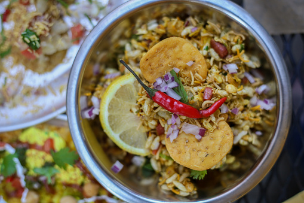

Bhel Puri

Description:
Bhelpuri is a savoury snack originating from India, and is also a type of chaat. It is made of puffed rice, vegetables and a tangy tamarind sauce, and has a crunchy texture.
Bhel is often identified as a 'beach snack', strongly associated with the beaches of Mumbai, such as Chowpatty or Juhu. One theory for its origin is that it was invented at a restaurant called Vithal near Victoria Terminus. According to another theory, bhelpuri was conceived by the city's Gujarati community, who made it by adding complex flavours to the simple North Indian chaat. Gujarati housewives began making it, and invented several varieties like the pakodi puri, and as it spread in popularity so many different communities like the Mangaloreans and Sindhis made their own versions.
Ingredients:
- 2 Cups Murmura (Puffed Rice)
- 5-6 Papdi (Crunchy salty wafers)
- 1 tbsp roasted peanuts
- 1/2 cup sev
- 1/2 cup onions
- 1/2 cup boiled potatoes
- 1/2 cup tomato
- 1 green chilli
- 2 tbsp coriander leaves
- 1/2 tbsp lemon juice
- 2 tsp tamarind chutney
- 2 tsp green coriander chutney
- 1/2 tsp red chilli powder
- 1 tsp chaat masala
- salt to taste
Steps:
- Take puffed rice in a large bowl. Add 5-6 pieces of namkeen papdi, roasted peanutes and sev. You can also add mixed namkeen, bundi or roasted chana dal.
- Add boiled potato, diced tomatoes, finely diced onion and fresh cut pieces of green chilli into the bowl.
- Add red chilli powder, chaat masala powder and salt to the bowl.
- Add tamarind chutney (imli ki chutney) and green coriander chutney along with a dash of fresh lemon juice and mix all the ingredients well.
- Bhel puri is ready. Garnish it with sev and freshly cut coriander leaves (hara dhaniya) before serving.